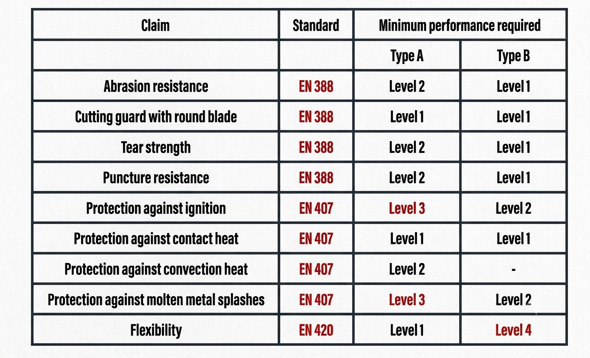

Welcome to our comprehensive welding series! Whether you are a seasoned professional managing high-volume industrial production or a distributor sourcing gear for your clients, choosing the correct hand protection is a critical decision.
The truth is, the right pair of welding gloves does far more than just shield skin—it directly impacts a welder's speed, precision, and overall work results.
The real secret to finding the perfect glove lies in balancing two critical factors: maximum finger dexterity and robust heat protection. In this step-by-step guide, we are breaking down the essential fundamentals you need to evaluate before adding a single pair of gloves to your inventory or workspace. Let's dive in. maximum finger dexterity and robust heat protection. In this step-by-step guide, we are breaking down the essential fundamentals you need to evaluate before adding a single pair of gloves to your inventory or workspace. Let's dive in.
As one of the most prevalent industrial bonding techniques, Arc welding is a staple in structural steel assembly. By utilizing an electric arc to melt a coated metal electrode into the joint, it binds heavy metals together with incredible strength. However, this high-energy process also produces the most intense workplace hazards—namely extreme temperatures, heavy sparking, and unpredictable molten metal splashes. Selecting heavy-duty, heat-resistant work gloves with reinforced leather shielding is the only way to safeguard operators against the severe thermal risks of this specific welding method.
Next up is MIG welding—the true workhorse of high-volume manufacturing. Because it is incredibly versatile and reliable, it is the go-to method for most everyday welding jobs and extended production shifts. MIG welding works by using electricity to strike an arc between a continuously fed wire electrode and the metal workpiece, smoothly joining them together.
However, because it's built for speed and volume, it can get pretty messy. While it doesn't require the delicate, ultra-fine precision of TIG welding, it produces a significant amount of flying sparks and a constant spatter of molten metal. If your team is handling long hours on a busy fabrication line, they need a comfortable, highly durable glove that handles repetitive heat exposure without wearing out.
TIG welding represents the pinnacle of specialized metal joining, relying on a sophisticated electric arc from a tungsten electrode to fuse critical components. Due to the high-precision nature of this manual application, the operator’s physical feedback loop is paramount. Unlike heavy-spatter environments, safety management for TIG applications focuses heavily on minimizing hand fatigue and maximizing touch sensitivity. Consequently, an effective TIG protective glove is engineered with thin, supple grain leathers that deliver superior flexibility rather than dense thermal padding—ensuring the uncompromised dexterity necessary for intricate, high-spec fabrication.
When it comes to reliable hand protection, leather remains the undisputed gold standard for industrial welding gloves. As a natural, breathable material, leather inherently acclimates to ambient temperature and workplace humidity. It delivers an unmatched combination of rugged durability, flexibility, and natural non-conductive properties that safely dissipate extreme heat.
Because different welding methods create unique environmental hazards—ranging from heavy molten spatter to close-proximity radiant heat—the specific cut and type of leather hide used matters immensely. Choosing the right split-leather or top-grain material ensures your operators get the exact balance of thermal shielding and movement required for their specific welding tasks. Below are the different types of leather that are fit for each welding procedure:
EN 12477:2001 + A1:2005 is the official safety standard guaranteeing that welding gloves provide verified, lab-tested defense against severe mechanical and thermal workplace hazards. To earn this certification, gloves must pass a rigorous combination of three core testing frameworks:
Mechanical Durability: Verifies high resistance to abrasions, tears, punctures, and blade cuts.
Thermal Insulation: Proves the leather handles molten metal spatter, contact heat, convective heat, and flame spread.
General Fitness: Ensures proper glove sizing, ergonomic comfort, and safe material construction.
The standard categorizes certified gloves into two distinct functional tiers based on construction thickness and application needs:
Engineered with thicker leather layers and dense structural fibers to provide maximum defense against intense radiant heat, heavy slag, and flying sparks. Sacrifices some fingertip dexterity for heavy thermal shielding.
Crafted using thinner, highly pliable grain leathers that prioritize uncompromised movement, finger flexibility, and micro-tactile feel. Features streamlined thermal padding to preserve torch control.
For MIG Welding (GMAW), procurement managers mostly utilize Type B gloves to ensure operators have sufficient hand dexterity for continuous line production. However, Type A gloves are also frequently deployed on MIG production floors when running high-wire feed speeds or managing heavy structural metal passes that generate severe radiant heat.
The following matrix illustrates how to select the ideal welding glove based on specific process requirements and international safety standards.

Professional welding demands a precise balance of heat protection and hand dexterity. Sourcing the wrong gear can compromise both operator safety and line productivity.